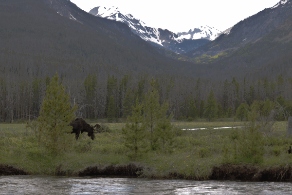

I am very interested in technology and that is why I am at Neumont right now. Some of the technological things that I am intersted in are:
| Networking | Server Administartion | Cyber Security |
I like to read in my spare time and I am currently reading Shaken by Tim Tebow and I am enjoying this book. I am also interested in photograpy; I mostly like to take pictures of nature and wildlife. This is one of the pictues that I took over the last summer in Rocky Mountain National Park. I really like to take pictues in the mountians of Colorado because I konw them very well and they are so close to where I live meaning that I do not have to go very far to be in them.